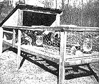
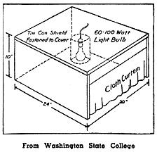
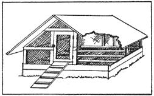

New, Easy Way To Raise Tender Chicken
By the Mother Earth News editors
March/April 1970
ONE of the most successful projects we've undertaken is raising chickens to eat - broilers and fryers, in what is called a "broiler battery". This efficient new way of raising eating chickens has become increasingly popular among the large commercial poultrymen during the past few years, but only recently have small broiler batteries been made for family use.
Directly below is a picture of our "home-size" broiler battery. Here is the way it works: In the top deck we place "30 day-old" chicks, dipping their beaks in the water tray (and the mash) as we take them out of the shipping carton. Dipping their beaks once or twice teaches them where to drink and eat. At the rear of the top deck is a heated chamber with a drape at the front. This is the brooder. It's heated automatically by an electric heat-unit. When the brooder drops below a certain temperature, the heat automatically goes on together with a small light. The light attracts the chicks and they duck under the drape into the warm brooder.
As they get hungry they come out to eat and drink from the feed and water trays. Once or twice a day - and it doesn't have to be done at a definite time - we change the water and add feed, a specially prepared battery broiler mash (be sure to get a vitamin fortified b attery feed). The chickens live on wire and are kept sanitary at all times. A few sheets of newspaper spread out in the dropping tray makes the daily cleaning easy - simply pull out tray and roll up newspaper.
At the end of 4 weeks, the baby chicks are divided into two equal groups - half go into the second deck, half into the lower deck. At the same time, another batch of 30 baby chicks may be added to the top deck.
In another 4 weeks, and each succeeding 4-week period, if you keep your battery running at capacity, you have 30 two-pound broilers.
Feed Cost - 16 cents a Pound
Even with today's expensive feed, our chicken costs us only 16 cents a pound. What's more, our battery takes less than 10 minutes a day to operate and it is truly "so simple a child can run it". Moreover, you can set it up in the basement, garage or shed - provided that, if you run the brooder during the winter, you have enough heat in any of these places to keep room temperature at 50° or above.
If you want to keep for your own use 15 broilers a month, then the other 15 can be sold to friends. By selling them at market prices you ought to earn enough to pay all your feed costs thereby having all the chicken you can eat at no cost.
The brooder is about 4 1/2 feet high, 3 feet wide, and 3 1/2 feet long. This size is made by a number of companies. They range in price from $23-$30. Names and addresses of Manufacturers are given at the end of this chapter.
One of the great things about these batteries is that they eliminate practically all chance of your losing your chicks by disease. At this writing I should say we've put over 800 baby chicks through our brooder. The hatchery from which we order our baby chicks - incidentally, we buy all males (cockerels) for they are cheaper and grow faster - sends us 32 chicks but charges for only 30. We have never lost more than these two extra chicks in any batch we've raised. And that isn't because we've been especially lucky, because four different friends of ours have bought broiler batteries - 3 of them didn't know enough to tell a hen from a rooster - and all have done well.
Mind These A B C's
If you will remember the following points, I'm sure you will have no trouble in raising chicks in a battery: A) Buy good baby chicks - the best cockerels cost only 7 to 13 cents each, depending on the season. You can run the brooder any time of year. Buy chicks of heavy breeds - Hampshires, R. I. Reds, Barred Rocks, White Wyandottes and White Rocks (easiest to dress), or any of these cross bred. Don't buy Leghorns - they are a poor meat bird. B) Make sure your feed dealer supplies you with broiler-battery feed. This feed is fortified with minerals and vitamins necessary because your chicks won't get sunshine. C) Brooder should be started a day before chicks arrive. The room temperature kept at 65°-75°, if possible. Set your brooder so that a thermometer 1" above wire floor inside registers 85°-90°. Fill water troughs with warm water. Let chicks feed upon arrival - unless they're under 36 hours old. Daily feeding period should be 12 to 14 hours. Temperature in brooder is gradually reduced each week until at end of 4 weeks it is down to 70°. D) Wash water pans in hot water every other day - see that chicks always have mash, and water and chick grit. E) Let chicks have plenty of fresh air - no drafts and don't let temperature in room drop below 50°.
A Few Tips on Dressing Chicken
The first chickens we dressed took about an hour a bird - the other day we did seven in about an hour.
We never particularly liked this phase of our farm activities and have spent a lot of time making it as efficient and simple as possible.
First, instead of using a chopping block and axe or the more expert commercial poultryman's method of sticking through the roof of the mouth, we use a gadget which looks like a miniature guillotine. This extremely humane device makes killing easy, sure and not messy.
Secondly, after dipping the chicken into hot water - not hot enough to burn chicken's skin - for about 30 seconds and plucking the feathers clean, we split the broiler down the back. This makes the intestines easy to remove in a mass. The bird can then be cut completely in half, washed, quartered; and it's done in much less time.
Tenderest Chicken
Battery broilers, fryers, or even roasters - and we've raised and eaten all three - are more tender than chicken grown on range. The reason for this is immediately apparent - broilers raised in confinement do not toughen their muscles as do birds grown on range. Battery broilers and fryers, in fact, are usually so tender that the wholesale buyer of live poultry often will not buy them to dress and market, because battery broilers picked up alive at the farm and trucked even 10 to 20 miles, often lose up to 25% of their weight they are so tender. However, this commercial disadvantage is a distinct plus when you are raising chicken for your own use.
Suggested Reading:
Better Broilers from Batteries, $1.00. Starting Right with Poultry - especially written by a leading authority for the beginner and part-time farmer. $2.75. Producing Eggs and Chickens with the Minimum of Purchased Feed, 35 cents Chicken of Tomorrow for Homesteaders, 35 cents
Home Made Brooder P.S. And we found Brower Mfg. Co., of Quincy, III, to be a very reliable supply house for all kinds of poultry-raising equipment. Send for their catalog.
If you do not have or buy the battery brooder pictured on the opposite page, you can easily set up a simple brooding; outfit as shown. (Or you can buy a simple brooder like this at very small expense.) You can vary size of light bulb, get approximately right temperature under brooder - about 90 degrees one inch from floor, reducing gradually to room temperature in about 4 weeks. Then remove brooder.
Floor space required for each bird is about 7 to 10 square inches under brooder and about 1/2 square foot outside brooder. Fine meshed wire or tar paper 12" high should be used to confine chicks close to brooder for first week.
Room or building used must be clean, fairly warm (70 degrees desirable - must not be less than 50), well ventilated, preferably with windows facing south for maximum sunlight. Your feed and grain dealer will have litter for floor, inexpensive feeding and watering implements; perhaps free, detailed pamphlets on this phase of poultry raising.
Summer Range Shelter Get your day-old chicks, either from feed dealer or by mail late in March or April. When six or seven weeks old, along in May (neck and head should be well feathered), birds can be transferred to summer range shelter unless house where started is designed for and has outside yards suitable for their growth to maturity. Cockerels and pullets should be separated at about 8 to 10 weeks of age, depending on the breed-in some breeds they are easier to tell apart than in others.
Putting pullets "on range" at 6 to 8 weeks old, with simple, shelter-type housing, as illustrated, is probably the best way to get healthy, sturdy birds. You can also raise broilers, fryers and roasters this way, but we think the battery-confinement method described and illustrated elsewhere on these two pages is preferable. You get better eat ing chicken in shorter time that way.
The shelters can be used in the North from May through October. Allowing the correct amount of floor space per bird - one square foot or more - a shelter 6 feet square would be large enough for 20 to 25 birds. (One of the most important things to remember about keeping any kind of livestock is never overcrowd).
Shelter design can be varied, but is based on these elements: a weather-tight roof; a wire mesh floor eight or more inches off the ground; roosts above this (one-by-two strips nailed flat on top of wire are suitable - allow 10" of roost space per bird); boards or wire all around bottom to keep birds from droppings under floor; wire around sides from floor to roof to allow good ventilation; a door to shut chickens in at night and to keep rodents out.
Range can be any grassy piece of land, clover being particularly good. Allow 100 square feet per bird-the more. range and the better the grass, the less boughten feed the birds will need, and the healthier they will be. Fence in to keep chickens away from garden and to keep dogs out. Covered feed trough and water fountain are placed near shelter and should be moved every week or so to assure clean footing for the birds.
 A complete chicken raising plant. With this broiler battery in your basement, garage or shed, and with no other equipment, you can raise baby chicks to 2 or 2 1/2 pound broilers in 8 to 10 weeks. Not more than 10 minutes a day care will give you 30 broilers a month at a feed cost of 16 cents a pound or less, depending on feed prices. |
 This outside sun porch is a convenient place to transfer 8 to 10 week old broilers and raise them to 3 to 7 pound fryers or roasters. Raising in confinement makes for tenderness and rapid weight gains. Sanitary floor is 7/8"" wire mesh. Allow one square foot of floor space per bird at 10 weeks - two square feet at 20 weeks. |
 One of the simplest most humane ways to kill poultry. A light blow of the hand and blade, held steady in the slot, punctures spinal cord leaving outlet for blood. Blade springs back. chicken is dropped into barrel. |
|
 |
 |
|